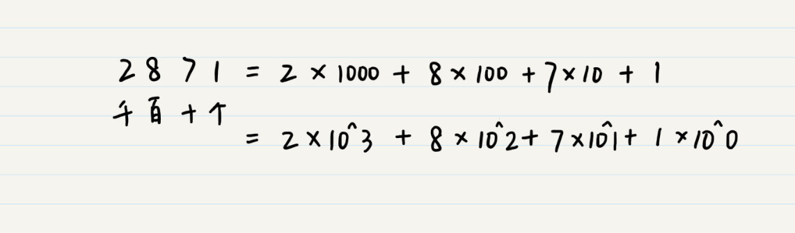
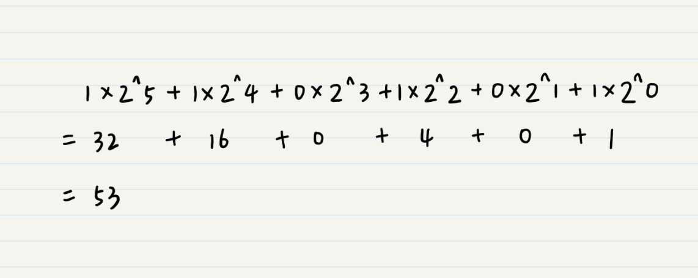
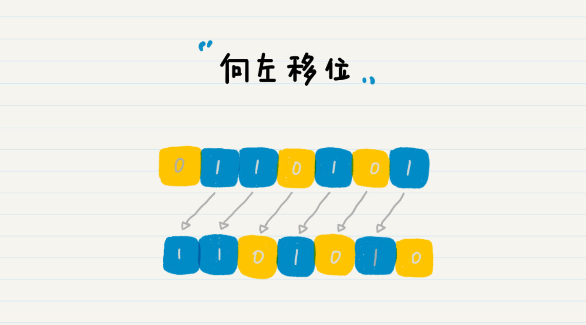
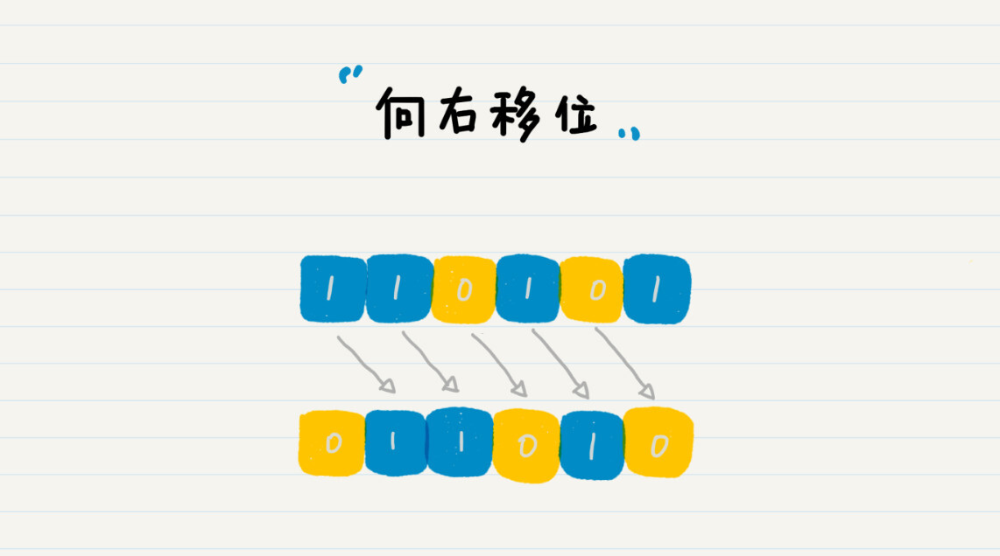
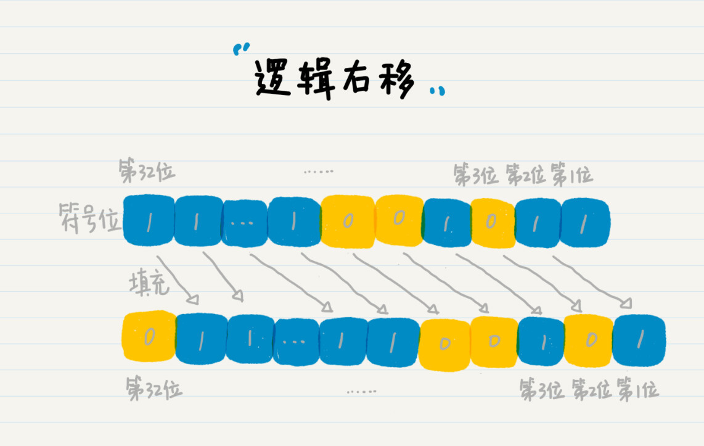
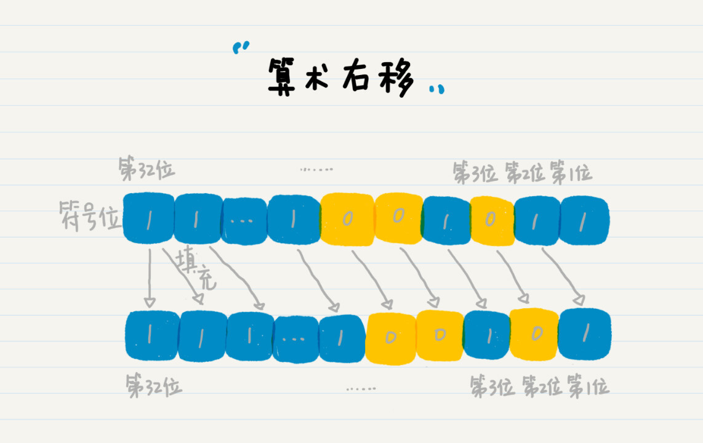
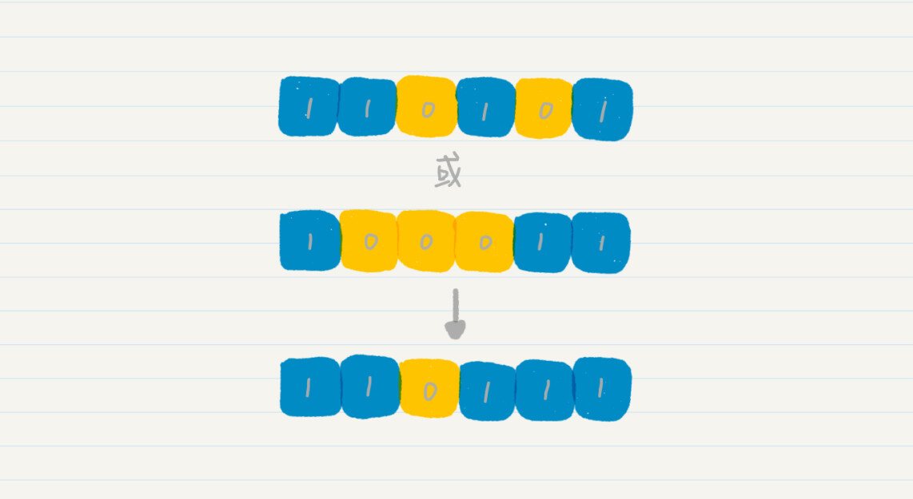
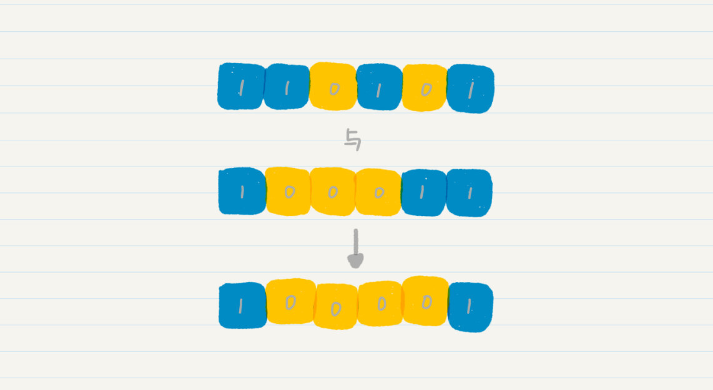
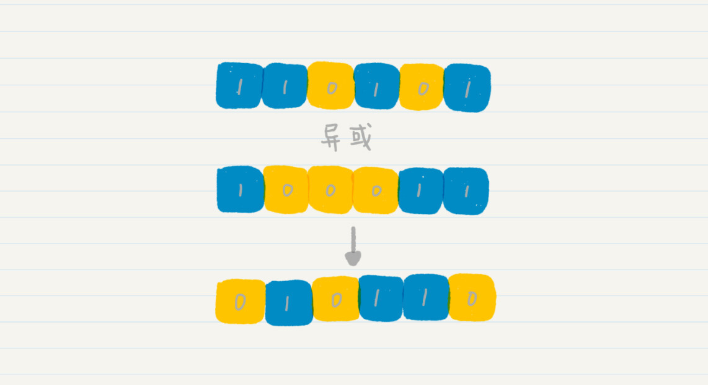

- 01 二进制：不了解计算机的源头，你学什么编程.md.html
- 02 余数：原来取余操作本身就是个哈希函数.md.html
- 03 迭代法：不用编程语言的自带函数，你会如何计算平方根？.md.html
- 04 数学归纳法：如何用数学归纳提升代码的运行效率？.md.html
- 05 递归（上）：泛化数学归纳，如何将复杂问题简单化？.md.html
- 06 递归（下）：分而治之，从归并排序到MapReduce.md.html
- 07 排列：如何让计算机学会“田忌赛马”？.md.html
- 08 组合：如何让计算机安排世界杯的赛程？.md.html
- 09 动态规划（上）：如何实现基于编辑距离的查询推荐？.md.html
- 10 动态规划（下）：如何求得状态转移方程并进行编程实现？.md.html
- 11 树的深度优先搜索（上）：如何才能高效率地查字典？.md.html
- 12 树的深度优先搜索（下）：如何才能高效率地查字典？.md.html
- 13 树的广度优先搜索（上）：人际关系的六度理论是真的吗？.md.html
- 14 树的广度优先搜索（下）：为什么双向广度优先搜索的效率更高？.md.html
- 15 从树到图：如何让计算机学会看地图？.md.html
- 16 时间和空间复杂度（上）：优化性能是否只是“纸上谈兵”？.md.html
- 17 时间和空间复杂度（下）：如何使用六个法则进行复杂度分析？.md.html
- 18 总结课：数据结构、编程语句和基础算法体现了哪些数学思想？.md.html
- 19 概率和统计：编程为什么需要概率和统计？.md.html
- 20 概率基础（上）：一篇文章帮你理解随机变量、概率分布和期望值.md.html
- 21 概率基础（下）：联合概率、条件概率和贝叶斯法则，这些概率公式究竟能做什么？.md.html
- 22 朴素贝叶斯：如何让计算机学会自动分类？.md.html
- 23 文本分类：如何区分特定类型的新闻？.md.html
- 24 语言模型：如何使用链式法则和马尔科夫假设简化概率模型？.md.html
- 25 马尔科夫模型：从PageRank到语音识别，背后是什么模型在支撑？.md.html
- 26 信息熵：如何通过几个问题，测出你对应的武侠人物？.md.html
- 27 决策树：信息增益、增益比率和基尼指数的运用.md.html
- 28 熵、信息增益和卡方：如何寻找关键特征？.md.html
- 29 归一化和标准化：各种特征如何综合才是最合理的？.md.html
- 30 统计意义（上）：如何通过显著性检验，判断你的A_B测试结果是不是巧合？.md.html
- 31 统计意义（下）：如何通过显著性检验，判断你的A_B测试结果是不是巧合？.md.html
- 32 概率统计篇答疑和总结：为什么会有欠拟合和过拟合？.md.html
- 33 线性代数：线性代数到底都讲了些什么？.md.html
- 34 向量空间模型：如何让计算机理解现实事物之间的关系？.md.html
- 35 文本检索：如何让计算机处理自然语言？.md.html
- 36 文本聚类：如何过滤冗余的新闻？.md.html
- 37 矩阵（上）：如何使用矩阵操作进行PageRank计算？.md.html
- 38 矩阵（下）：如何使用矩阵操作进行协同过滤推荐？.md.html
- 39 线性回归（上）：如何使用高斯消元求解线性方程组？.md.html
- 40 线性回归（中）：如何使用最小二乘法进行直线拟合？.md.html
- 41 线性回归（下）：如何使用最小二乘法进行效果验证？.md.html
- 42 PCA主成分分析（上）：如何利用协方差矩阵来降维？.md.html
- 43 PCA主成分分析（下）：为什么要计算协方差矩阵的特征值和特征向量？.md.html
- 44 奇异值分解：如何挖掘潜在的语义关系？.md.html
- 45 线性代数篇答疑和总结：矩阵乘法的几何意义是什么？.md.html
- 46 缓存系统：如何通过哈希表和队列实现高效访问？.md.html
- 47 搜索引擎（上）：如何通过倒排索引和向量空间模型，打造一个简单的搜索引擎？.md.html
- 48 搜索引擎（下）：如何通过查询的分类，让电商平台的搜索结果更相关？.md.html
- 49 推荐系统（上）：如何实现基于相似度的协同过滤？.md.html
- 50 推荐系统（下）：如何通过SVD分析用户和物品的矩阵？.md.html
- 51 综合应用篇答疑和总结：如何进行个性化用户画像的设计？.md.html
- 导读：程序员应该怎么学数学？.md.html
- 开篇词 作为程序员，为什么你应该学好数学？.md.html
- 数学专栏课外加餐（一） 我们为什么需要反码和补码？.md.html
- 数学专栏课外加餐（三）：程序员需要读哪些数学书？.md.html
- 数学专栏课外加餐（二） 位操作的三个应用实例.md.html
- 结束语 从数学到编程，本身就是一个很长的链条.md.html
- 捐赠
01 二进制：不了解计算机的源头，你学什么编程
我们都知道，计算机的起源是数学中的二进制计数法。可以说，没有二进制，就没有如今的计算机系统。那什么是二进制呢？为什么计算机要使用二进制，而不是我们日常生活中的十进制呢？如何在代码中操作二进制呢？专栏开始，我们就从计算机认知的起源——二进制出发，讲讲它在计算机中的“玄机”。
什么是二进制计数法？
为了让你更好地理解二进制计数法，我们先来简单地回顾一下人类计数的发展史。
原始时代，人类用路边的小石子，来统计放牧归来的羊只数量，这表明我们很早就产生了计数的意识。后来，罗马人用手指作为计数的工具，并在羊皮上画出Ⅰ、Ⅱ、Ⅲ来代替手指的数量。表示一只手时，就写成“Ⅴ”形，表示两只手时，就画成“ⅤⅤ”形等等。
公元3世纪左右，印度数学家（也有说法是阿拉伯人）发明了阿拉伯数字。阿拉伯数字由从0到9这样10个计数符号组成，并采取进位制法，高位在左，低位在右，从左往右书写。由于阿拉伯数字本身笔画简单，演算便利，因此它们逐渐在各国流行起来，成为世界通用的数字。
日常生活中，我们广泛使用的十进制计数法，也是基于阿拉伯数字的。这也是十进制计数法的基础。因此，相对其他计数方法，十进制最容易被我们所理解。
让我们来观察一个数字：2871。

其中^表示幂或次方运算。十进制的数位（千位、百位、十位等）全部都是10^n的形式。需要特别注意的是，任何非0数字的0次方均为1。在这个新的表示式里，10被称为十进制计数法的基数，也是十进制中“十”的由来。这个我想你应该好理解，因为这和我们日常生活的习惯是统一的。
明白了十进制，我们再试着用类似的思路来理解二进制的定义。我以二进制数字110101为例，解释给你听。我们先来看，这里110101究竟代表了十进制中的数字几呢？
刚才我们说了，十进制计数是使用10作为基数，那么二进制就是使用2作为基数，类比过来，二进制的数位就是2^n的形式。如果需要将这个数字转化为人们易于理解的十进制，我们就可以这样来计算：

按照这个思路，我们还可以推导出八进制（以8为基数）、十六进制（以16为基数）等等计数法，很简单，我在这里就不赘述了。
至此，你应该已经理解了什么是二进制。但是仅有数学的理论知识是不够的，结合相关的代码实践，相信你会有更深刻的印象。
基于此，我们来看看二进制和十进制数在Java语言中是如何互相转换的，并验证一下我们之前的推算。我这里使用的是Java语言来实现的，其他主流的编程语言实现方式都是类似的。
这段代码的实现采用了Java的BigInteger类及其API函数，我都加了代码注释，并且穿插一些解释，你应该可以看懂。
首先，我们引入BigInteger包，通过它和Integer类的API函数进行二进制和十进制的互相转换。
import java.math.BigInteger;
public class Lesson1_1 {
/**
* @Description: 十进制转换成二进制
* @param decimalSource
* @return String
*/
public static String decimalToBinary(int decimalSource) {
BigInteger bi = new BigInteger(String.valueOf(decimalSource)); //转换成BigInteger类型，默认是十进制
return bi.toString(2); //参数2指定的是转化成二进制
}
/**
* @Description: 二进制转换成十进制
* @param binarySource
* @return int
*/
public static int binaryToDecimal(String binarySource) {
BigInteger bi = new BigInteger(binarySource, 2); //转换为BigInteger类型，参数2指定的是二进制
return Integer.parseInt(bi.toString()); //默认转换成十进制
}
}
然后，我们通过一个十进制数和一个二进制数，来验证一下上述代码的正确性。
public static void main(String[] args) {
int a = 53;
String b = "110101";
System.out.println(String.format("数字%d的二进制是%s", a, Lesson1_1.decimalToBinary(a))); //获取十进制数53的二进制数
System.out.println(String.format("数字%s的十进制是%d", b, Lesson1_1.binaryToDecimal(b))); //获取二进制数110101的十进制数
}
这段代码运行的结果是：十进制数字53的二进制是110101，二进制数字110101的十进制是53。
好了，关于十进制和二进制的概念以及进制之间的相互转换，你应该都很清楚了。既然有十进制，又有二进制，你可能就要问了，为啥计算机使用的是二进制而不是十进制呢？
计算机为什么使用二进制？
我觉得，计算机使用二进制和现代计算机系统的硬件实现有关。组成计算机系统的逻辑电路通常只有两个状态，即开关的接通与断开。
断开的状态我们用“0”来表示，接通的状态用“1”来表示。由于每位数据只有断开与接通两种状态，所以即便系统受到一定程度的干扰时，它仍然能够可靠地分辨出数字是“0”还是“1”。因此，在具体的系统实现中，二进制的数据表达具有抗干扰能力强、可靠性高的优点。
相比之下，如果用十进制设计具有10种状态的电路，情况就会非常复杂，判断状态的时候出错的几率就会大大提高。
另外，二进制也非常适合逻辑运算。逻辑运算中的“真”和“假”，正好与二进制的“0”和“1”两个数字相对应。逻辑运算中的加法（“或”运算）、乘法（“与”运算）以及否定（“非”运算）都可以通过“0”和“1”的加法、乘法和减法来实现。
二进制的位操作
了解了现代计算机是基于二进制的，我们就来看看，计算机语言中针对二进制的位操作。这里的位操作，也叫作位运算，就是直接对内存中的二进制位进行操作。常见的二进制位操作包括向左移位和向右移位的移位操作，以及“或”“与”“异或”的逻辑操作。下面我们一一来看。
向左移位
我们先来看向左移位。
二进制110101向左移一位，就是在末尾添加一位0，因此110101就变成了1101010。请注意，这里讨论的是数字没有溢出的情况。
所谓数字溢出，就是二进制数的位数超过了系统所指定的位数。目前主流的系统都支持至少32位的整型数字，而1101010远未超过32位，所以不会溢出。如果进行左移操作的二进制已经超出了32位，左移后数字就会溢出，需要将溢出的位数去除。

在这个例子中，如果将1101010换算为十进制，就是106，你有没有发现，106正好是53的2倍。所以，我们可以得出一个结论：二进制左移一位，其实就是将数字翻倍。
向右移位
接下来我们来看向右移位。
二进制110101向右移一位，就是去除末尾的那一位，因此110101就变成了11010（最前面的0可以省略）。我们将11010换算为十进制，就是26，正好是53除以2的整数商。所以二进制右移一位，就是将数字除以2并求整数商的操作。

下面我们来看看，用代码如何进行移位操作。
import java.math.BigInteger;
public class Lesson1_2 {
/**
* @Description: 向左移位
* @param num-等待移位的十进制数, m-向左移的位数
* @return int-移位后的十进制数
*/
public static int leftShift(int num, int m) {
return num << m;
}
/**
* @Description: 向右移位
* @param num-等待移位的十进制数, m-向右移的位数
* @return int-移位后的十进制数
*/
public static int rightShift(int num, int m) {
return num >>> m;
}
}
然后，我们用一段测试代码验证下结果。
public static void main(String[] args) {
int num = 53;
int m = 1;
System.out.println(String.format("数字%d的二进制向左移%d位是%d", num, m, Lesson1_2.leftShift(num, m))); //测试向左移位
System.out.println(String.format("数字%d的二进制向右移%d位是%d", num, m, Lesson1_2.rightShift(num, m))); //测试向右移位
System.out.println();
m = 3;
System.out.println(String.format("数字%d的二进制向左移%d位是%d", num, m, Lesson1_2.leftShift(num, m))); //测试向左移位
System.out.println(String.format("数字%d的二进制向右移%d位是%d", num, m, Lesson1_2.rightShift(num, m))); //测试向右移位
}
这段代码的运行结果是：数字53向左移1位是106；数字53向右移1位是26。数字53向左移3位是424，数字53向右移3位是6。
我来解释一下。其中，移位1次相当于乘以或除以2，而移位3次就相当于乘以或除以8（即2的3次方）。细心的话，你可能已经发现，Java中的左移位和右移位的表示是不太一样的。
左移位是<<，那右移位为什么是>>>而不是>>呢？实际上，>>也是右移操作。简单来说，之所以有这两种表达方式，根本原因是Java的二进制数值中最高一位是符号位。这里我给你详细解释一下。
当符号位为0时，表示该数值为正数；当符号位为1时，表示该数值为负数。我们以32位Java为例，数字53的二进制为110101，从右往左数的第32位是0，表示该数是正数，只是通常我们都将其省略。
如果数字是-53呢？那么第32位就不是0，而是1。请注意我这里列出的是补码。
那么这个时候向右移位，就会产生一个问题：对于符号位（特别是符号位为1的时候），我们是否也需要将其右移呢？因此，Java里定义了两种右移，逻辑右移和算术右移。逻辑右移1位，左边补0即可。

算术右移时保持符号位不变，除符号位之外的右移一位并补符号位1。补的1仍然在符号位之后。

逻辑右移在Java和Python语言中使用>>>表示，而算术右移使用>>表示。如果你有兴趣，可以自己编码尝试一下，看看这两种操作符输出的结果有何不同。
在C或C++语言中，逻辑右移和算数右移共享同一个运算符>>。那么，编译器是如何决定使用逻辑右移还是算数右移呢？答案是，取决于运算数的类型。如果运算数类型是unsigned，则采用逻辑右移；而是signed，则采用算数右移。如果你针对unsigned类型的数据使用算数右移，或者针对signed类型的数据使用逻辑右移，那么你首先需要进行类型的转换。
由于左移位无需考虑高位补1还是补0（符号位可能为1或0），所以不需要区分逻辑左移和算术左移。
位的“或”
我们刚才说了，二进制的“1”和“0”分别对应逻辑中的“真”和“假”，因此可以针对位进行逻辑操作。
逻辑“或”的意思是，参与操作的位中只要有一个位是1，那么最终结果就是1，也就是“真”。如果我们将二进制110101和100011的每一位对齐，进行按位的“或”操作，就会得到110111。

位的“与”
同理，我们也可以针对位进行逻辑“与”的操作。“与”的意思是，参与操作的位中必须全都是1，那么最终结果才是1（真），否则就为0（假）。如果我们将二进制110101和100011的每一位对齐，进行按位的“与”操作，就会得到100001。

位的“异或”
逻辑“异或”和“或”有所不同，它具有排异性，也就是说如果参与操作的位相同，那么最终结果就为0（假），否则为 1（真）。所以，如果要得到1，参与操作的两个位必须不同，这就是此处“异”的含义。我们将二进制110101和100011的每一位对齐，进行按位的“异或”操作，可以得到结果是10110。

我总结一下，“异或”操作的本质其实就是，所有数值和自身进行按位的“异或”操作之后都为0。而且要通过“异或”操作得到0，也必须通过两个相同的数值进行按位“异或”。这表明了两个数值按位“异或”结果为0，是这两个数值相等的必要充分条件，可以作为判断两个变量是否相等的条件。
接下来，我们来学习一下，在代码中如何实现二进制的逻辑操作。Java中使用|表示按位的“或”，&表示按位“与”，^表示按位“异或”。
import java.math.BigInteger;
public class Lesson1_3 {
/**
* @Description: 二进制按位“或”的操作
* @param num1-第一个数字，num2-第二个数字
* @return 二进制按位“或”的结果
*/
public static int or(int num1, int num2) {
return (num1 | num2);
}
/**
* @Description: 二进制按位“与”的操作
* @param num1-第一个数字，num2-第二个数字
* @return 二进制按位“与”的结果
*/
public static int and(int num1, int num2) {
return (num1 & num2);
}
/**
* @Description: 二进制按位“异或”的操作
* @param num1-第一个数字，num2-第二个数字
* @return 二进制按位“异或”的结果
*/
public static int xor(int num1, int num2) {
return (num1 ^ num2);
}
}
同样，我们写一段测试代码，验证一下上面三个函数。
public static void main(String[] args) {
int a = 53;
int b = 35;
System.out.println(String.format("数字%d(%s)和数字%d(%s)的按位‘或’结果是%d(%s)",
a, decimalToBinary(a), b, decimalToBinary(b), Lesson2_3.or(a, b), decimalToBinary(Lesson1_3.or(a, b)))); //获取十进制数53和35的按位“或”
System.out.println(String.format("数字%d(%s)和数字%d(%s)的按位‘与’结果是%d(%s)",
a, decimalToBinary(a), b, decimalToBinary(b), Lesson2_3.and(a, b), decimalToBinary(Lesson1_3.and(a, b)))); //获取十进制数53和35的按位“与”
System.out.println(String.format("数字%d(%s)和数字%d(%s)的按位‘异或’结果是%d(%s)",
a, decimalToBinary(a), a, decimalToBinary(a), Lesson2_3.xor(a, a), decimalToBinary(Lesson1_3.xor(a, a)))); //获取十进制数53和35的按位“异或”
}
这段代码的运行结果是：数字53(110101)和数字35(100011)的按位‘或’结果是55(110111)，数字53(110101)和数字35(100011)的按位‘与’结果是33(100001)，数字53(110101)和数字53(110101)的按位‘异或’结果是0(0)。
小结
今天我们聊了二进制，你可能会问：学习二进制究竟有什么用呢？平时的编程中，我们好像并没有使用相关的知识啊？确实，目前的高级语言可以帮助我们将人类的思维逻辑转换为使用0和1的机器语言，我们不用再为此操心了。但是，二进制作为现代计算机体系的基石，这些基础的概念和操作，你一定要非常了解。
二进制贯穿在很多常用的概念和思想中，例如逻辑判断、二分法、二叉树等等。逻辑判断中的真假值就是用二进制的1和0来表示的；二分法和二叉树都是把要处理的问题一分为二，正好也可以通过二进制的1和0来表示。因此，理解了二进制，你就能更加容易地理解很多计算机的数据结构和算法，也为我们后面的学习打下基础。
思考题
如果不使用Java语言自带的BigInteger类，我们还有什么方法来实现十进制到二进制的转换呢？（提示：可以使用二进制的移位和按位逻辑操作来实现。）
欢迎在留言区交作业，并写下你今天的学习笔记。你可以点击“请朋友读”，把今天的内容分享给你的好友，和他一起精进。
© 2019 - 2023 Liangliang Lee. Powered by gin and hexo-theme-book.